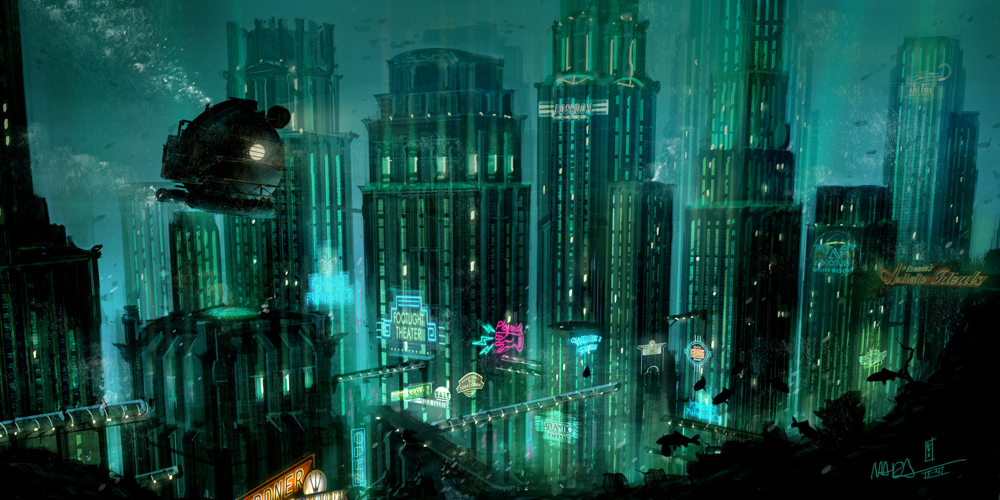

Sitios de moda
Asgard
Es el mundo de los "Aesir" gobernado por Odín y su esposa Freya y rodeado por una muralla incompleta, atribuida a un anónimo gigante, de acuerdo a Gylfaginning.Forma parte de uno de los Nueve Reinos de Yggdrasil, un fresno perenne también llamado el "árbol de la vida" o "fresno del universo".
Endor
Esta luna de Endor recibe el nombre de luna boscosa de Endor, y también es llamada Luna Santuarioes.Es un satélite muy rico en fauna. En sus zonas boscosas se pueden hallar tanto gorax, como blurrg, pájaros gunla, blopes, wisties (seres luminosos), y muchas otras criaturas. En sus llanuras se consiguen bordok, ruggers, lobos-jab alí, borras y gaupas. De igual manera, en ciertos sitios escabrosos hay dragones-cóndor y muchas clases de aves que pocos han logrado avistar. Pero desde luego ciertas especies han logrado evolucionar hasta el punto de ser consideradas como inteligentes. Entre ellas podemos encontrar a los ewoks, los yuzzum, los duloks, los gupins, los teek, y eventualmente a los gorax.
Rapture
Rapture es una ciudad de enormes proporciones bajo el océano Atlántico ideada y fundada por Andrew Ryan para escapar de los conflictos políticos, sociales y religiosos después de la Segunda Guerra Mundial. Fue abierta a los ciudadanos el 5 de noviembre de 1946, pero acabada completamente en 1951. Su localización es 63° 2' Norte, 29° 55' Oeste, a aproximadamente unos 433 kilómetros hacia el sur-oeste desde la capital de Islandia, Reykjavik.